Folosirea criptării end-to-end
Dacă funcția este activată pe server, Nextcloud îți permite să-ți criptezi fișierele pe propriile dispozitive. Aceasta se numește criptare end-to-end (E2EE), deoarece fișierele sunt criptate pe dispozitivul tău și decriptate tot doar pe dispozitivul tău. Serverul nu vede niciodată fișierele necriptate, ceea ce protejează și mai bine confidențialitatea utilizatorilor și securitatea datelor.
Activarea E2EE
Dacă administratorul a activat aplicația End-to-End Encryption, poți începe să o folosești de pe unul dintre dispozitivele tale. Deschide setările clientului Nextcloud și caută setările de criptare E2EE.
Desktop

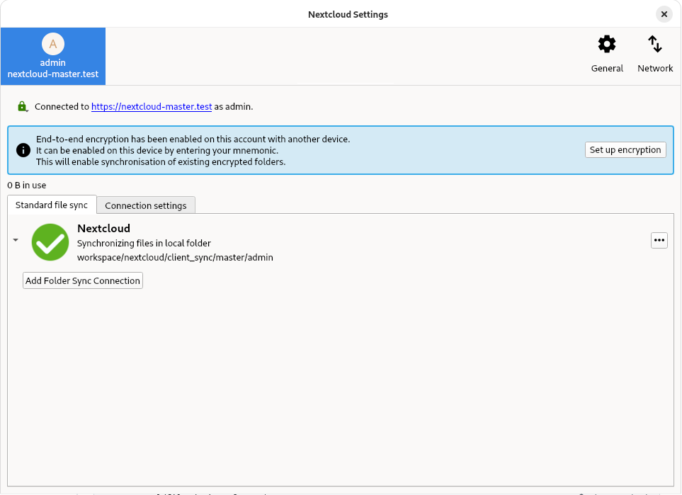
Android

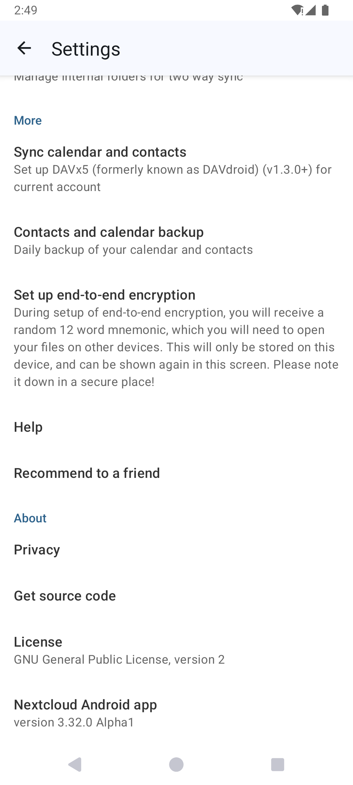


Web
Atenționare
Criptarea unui dosar nu poate fi activată din browser. Trebuie activată dintr-o aplicație client, pentru desktop sau mobilă.
Criptarea unui dosar
Atenționare
Criptarea poate fi activată doar pentru dosare goale.


Android

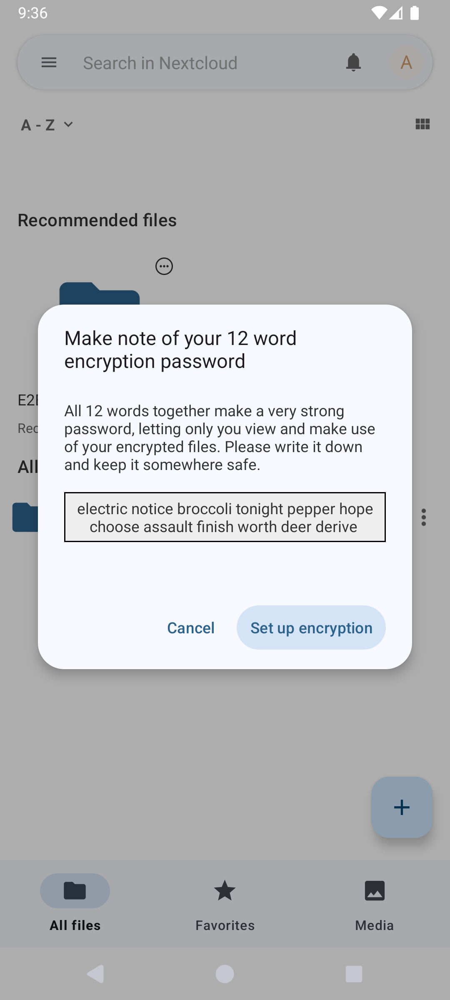
iOS

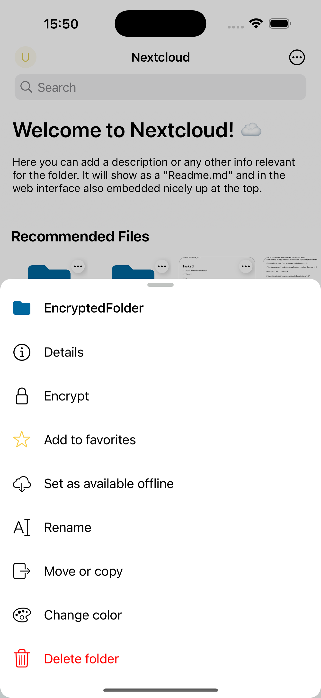
Web
Atenționare
Criptarea unui dosar nu poate fi activată din browser. Trebuie activată dintr-o aplicație client, pentru desktop sau mobilă.
Adăugarea unui dispozitiv E2EE
Desktop

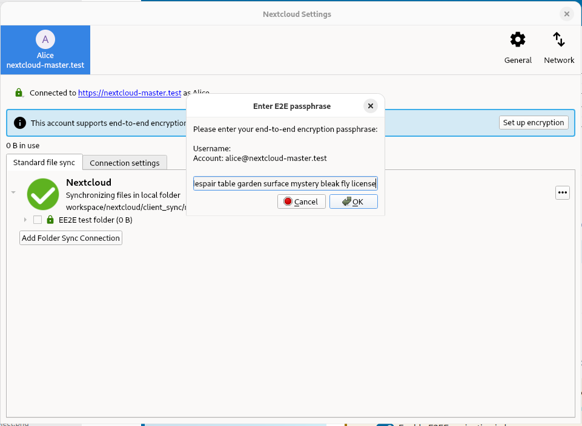
Android

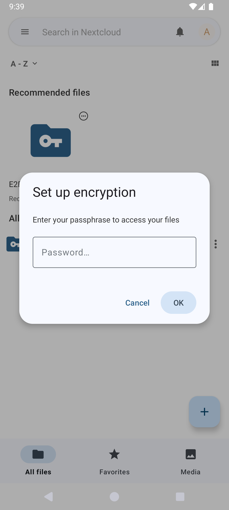

Web
În browser, activează mai întâi E2EE în setările personale. Este necesar, deoarece E2EE este mai puțin sigură în browser: trebuie să ai încredere deplină că administratorul nu modifică codul sursă pe care îl va executa browserul. Deocamdată, dosarele E2EE sunt doar pentru citire în browser, așa că din browser nu poți adăuga, elimina, edita sau partaja un fișier E2EE.

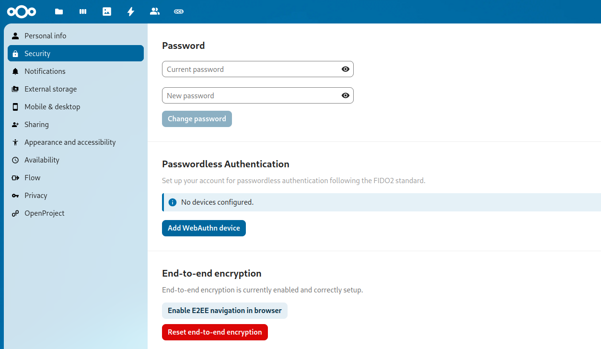

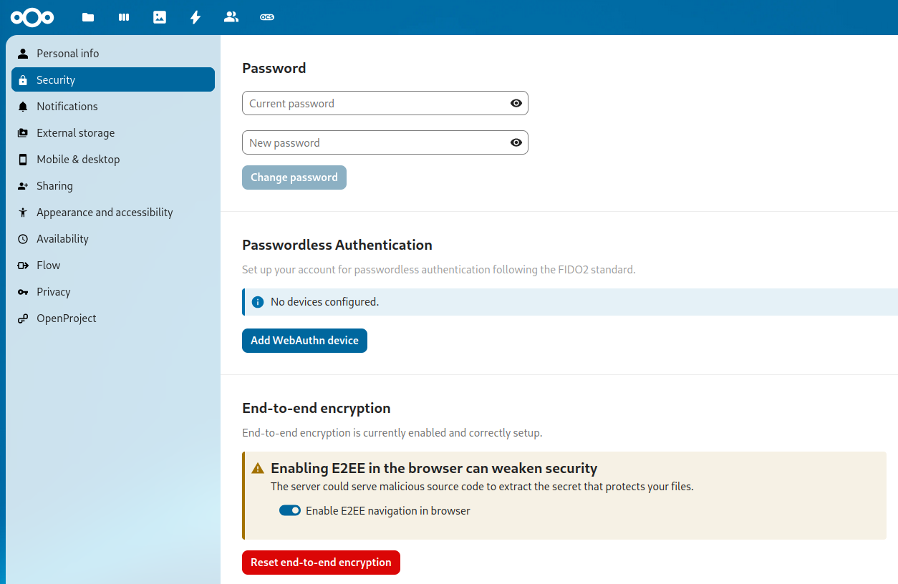

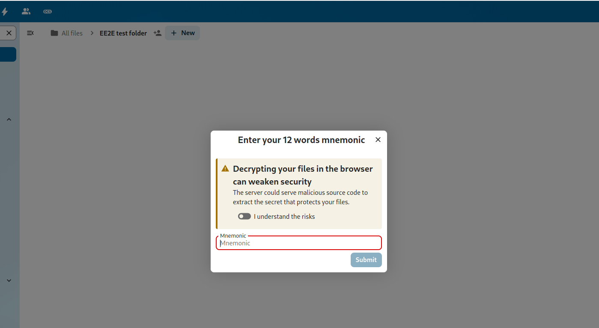
Afișarea frazei mnemonice
Fraza mnemonică este o listă de cuvinte folosită pentru criptarea și decriptarea fișierelor. Este important să o păstrezi în siguranță, deoarece este singura modalitate de a-ți accesa fișierele dacă pierzi accesul la dispozitiv. Dacă pierzi fraza mnemonică, pierzi accesul la fișiere.
Desktop

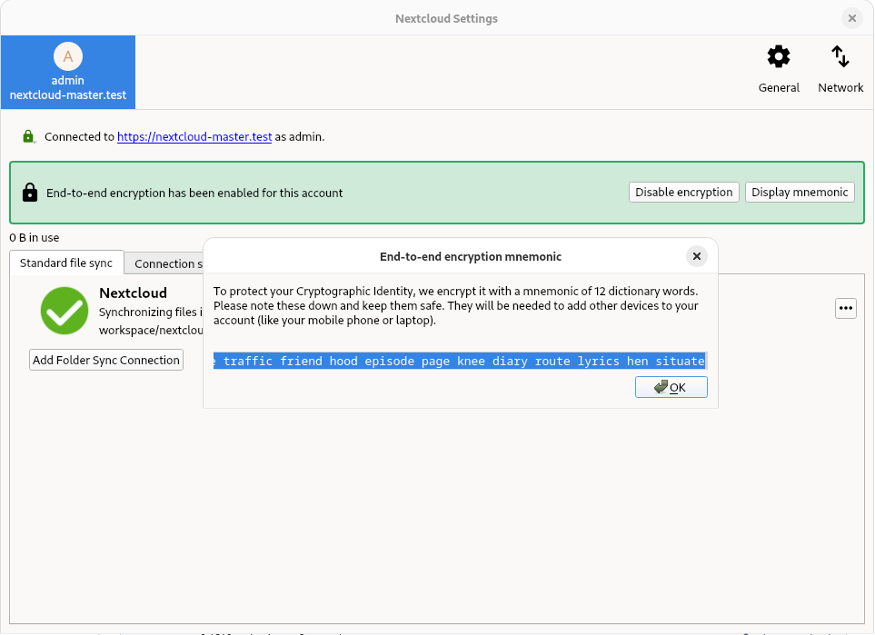
Android

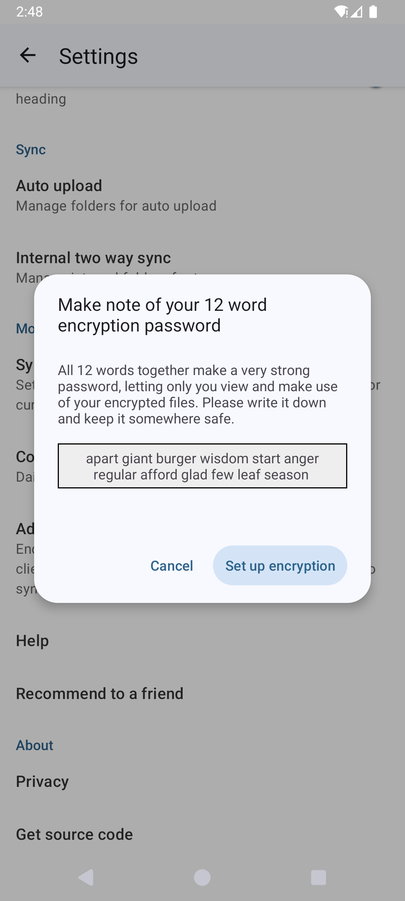

Web
Atenționare
Fraza mnemonică nu poate fi afișată în browser.